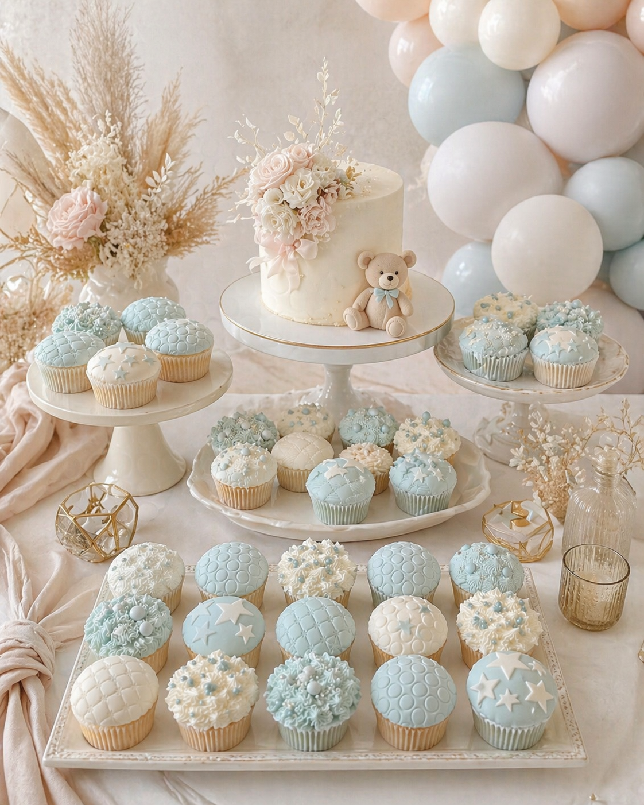
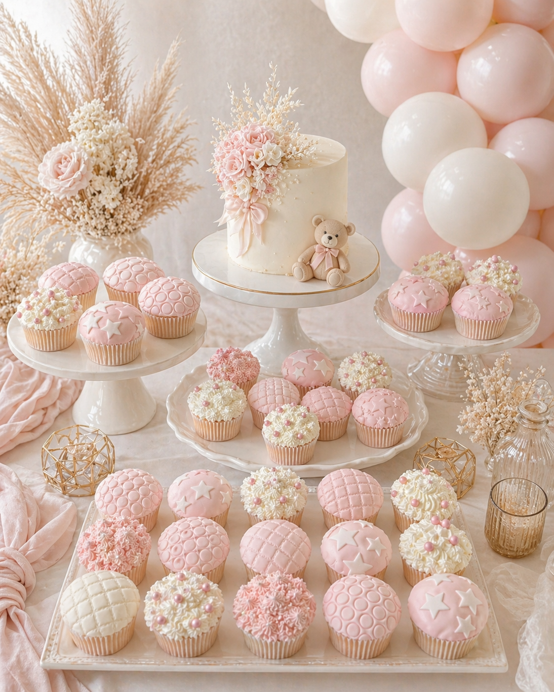
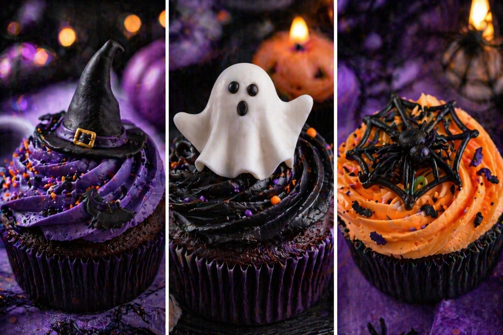
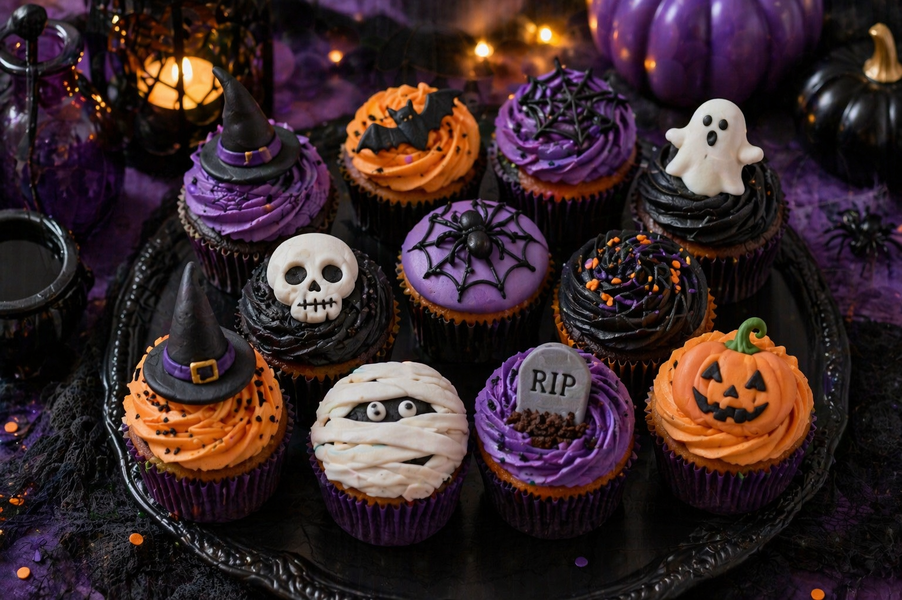

A truly beautiful celebration is built from layers. The balloon styling frames the moment, the florals add softness, and the dessert table — when it’s done well — ties everything together into something that feels genuinely considered. Fondant-decorated cupcakes are one of the most effective ways to add that finishing layer of elegance.
Whether you’re planning a baby shower in Kent, a first birthday party, or a seasonal Halloween celebration, fondant moulds and embossing tools make it possible to create cupcakes that don’t just taste wonderful — they look like part of the design. Here’s everything you need to know to make your dessert table sing.
Why the Dessert Table is Worth Getting Right
The dessert table is almost always one of the most photographed parts of a celebration. Guests gather around it, children point at it, and it appears in the background of dozens of photos throughout the day. A beautiful display doesn’t need to be expensive — it just needs to be cohesive.
The biggest mistake we see is a dessert table that feels disconnected from the rest of the styling. Mismatched colours, different cake stands at random heights, and cupcakes that look like they came from a supermarket shelf rather than a styled display. The fix is straightforward: treat the dessert table as part of your overall design, not as an afterthought.
“The best dessert tables don’t feel separate from the balloons and decor — they feel like part of one beautiful story.”
When your cupcake colours reflect the balloon palette, and the dessert table sits within the same styled zone as the backdrop and garland, the whole setup feels curated. That’s what guests remember, and what photographs best.
Baby Shower Cupcake Ideas — Soft, Elegant Fondant Designs
Baby shower styling lends itself beautifully to delicate, refined dessert displays. The palette is typically soft — pastels, neutrals and gentle tones — and fondant cupcakes are the perfect vehicle for bringing that same softness to the dessert table.

Powder blue fondant cupcakes with quilted, bubble and star embossing — a classic combination for a baby shower dessert table
Quilted Fondant Cupcakes
A diamond-quilted fondant finish gives cupcakes an unmistakably luxury feel. The pattern is created by pressing a quilted embosser into rolled fondant before placing it on the cupcake. The result is clean, structured, and elegant — like a tiny Chanel-inspired topper. This style works in any colour but looks particularly beautiful in powder blue, soft blush, ivory, and warm white.
Bubble & Dot Embossed Cupcakes
Embossed dot or bubble textures feel playful but still refined. They’re achieved with a polka dot impression mat and pair especially well with modern baby shower themes — think sky-blue and white, or sage and cream. This is the style that tends to appeal most to parents who want something a little different without going too themed.
Star Topped Cupcakes
Simple star fondant shapes — pressed, cut and placed on a flat fondant disc — create a dreamy, whimsical feel that works beautifully with celestial or sky-themed baby showers. Stars sit particularly well in powder blue, ivory and silver palettes.
Piped Designs with Pearl Details
Buttercream swirls finished with tiny sugar pearls, dragees, or small fondant accents add texture and softness without a mould. The combination of soft piping and the occasional fondant star or quilted disc creates variety across the display — which is exactly what makes a dessert table feel like it was thoughtfully arranged rather than simply placed.
Colour Tip for Baby Showers
For a boy or gender-neutral baby shower, powder blue, ivory and white is timeless and effortlessly elegant. For a girl or neutral–warm palette, try blush pink, champagne and cream. Both work beautifully with organic balloon garlands.
Matching Cupcakes to Your Balloon Palette
This is the single most effective way to elevate a dessert display. When the cupcake fondant colours echo the balloon palette, the whole setup feels intentional and designed — rather than just assembled.
| Balloon palette | Cupcake colour match | Fondant style |
|---|---|---|
| Powder blue & white | Sky blue fondant, ivory piping | Quilted, stars, bubble emboss |
| Blush pink & champagne | Dusty rose fondant, cream swirls | Floral, quilted, pearl details |
| Sage green & cream | Ivory & white fondant, sage accents | Floral, minimal dot emboss |
| Neutral luxe (sand & caramel) | Warm ivory, caramel fondant | Quilted, textured swirl |
| Halloween (black, purple, orange) | Deep purple, black, burnt orange | Spiderweb, bat, ghost, pumpkin |

The blush pink palette carried across cupcakes, cake and balloon garland — a fully cohesive dessert table
First Birthday Cupcake Styling
For first birthday celebrations, cupcakes are a lovely addition to the main smash cake and help to fill a dessert table without taking focus away from the centrepiece. They also serve a practical purpose — when you have a mix of guests of different ages, cupcakes mean everyone can grab a treat without the complexity of cutting and serving a tiered cake.
The most effective first birthday cupcake setups we’ve seen use two or three different fondant designs within the same palette — say, a quilted top, a bubble-embossed top, and a simple piped swirl with a star. The variety creates visual interest while the consistent colour keeps everything cohesive.
Quilted Fondant Dome
A structured quilted top in the party’s main colour. Clean, elegant, and photographs beautifully on a cake stand.
Bubble Emboss Top
Playful dot texture that adds energy to the display. Works especially well in pastel blue or blush for a first birthday.
Piped Rosette & Pearl
A classic buttercream rosette with a single sugar pearl. Soft, traditional, and unfussy — a lovely contrast to fondant-topped cupcakes.
Star Fondant Top
Flat fondant disc with an embossed or cut-out star. Perfect for celestial, dreamy or “twinkle twinkle” birthday themes.
Floral Piped Swirl
Rustic buttercream flowers in tones that echo the balloon palette. Beautiful for garden parties and spring celebrations.
Number “1” Fondant Topper
A small fondant or wafer paper number “1” placed on top of a swirl. Simple, effective, and instantly ties the cupcake to the occasion.
Teddy Bear Theme
If you’re planning a teddy bear baby shower or birthday, have a read of our teddy bear baby shower ideas guide. Warm neutral cupcakes in caramel and cream with quilted fondant tops sit perfectly in that palette, alongside pampas grass, dried botanicals, and a soft cream balloon garland.
Halloween Cupcake Ideas — Seasonal Styling Done Well
Halloween styling has the potential to be genuinely beautiful — but it can also veer quickly into cheap and garish if the palette and execution aren’t considered. The key is treating it with the same care and intentionality as any other celebration, rather than reaching for whatever the supermarket has in October.


Halloween done properly: a rich, considered palette of black, deep purple and burnt orange with varied fondant designs throughout
The Palette That Works
Avoid neon orange and flat black — that’s what makes Halloween look cheap. Instead, work with:
Deep plum, rich purple, and burnt orange with black and ivory accents. This palette is dramatic, rich, and genuinely beautiful. It photographs extremely well with dark moody styling — blackened cake stands, amber glassware, lanterns and dark linens.
Fondant Design Ideas for Halloween
- Spiderweb embossing — a simple impression mat creates an intricate, delicate design in black fondant
- Ghost toppers — white fondant shaped into a ghost, with tiny black royal icing eyes; sweet and slightly spooky
- Witch hat toppers — a fondant cone and brim in black with a tiny gold or orange belt detail
- Pumpkin faces — orange fondant domes with pressed or cut features; the classic Halloween cupcake done well
- Mummy wrap — white fondant strips criss-crossed across the top with small royal icing eyes; surprisingly elegant in ivory and black
- Black fondant disc with a purple buttercream swirl beneath — sophisticated and minimal, but very effective
Balloon Pairing for Halloween
Halloween cupcakes in purple, black and orange pair beautifully with a balloon garland in the same palette. Matte black and matte purple balloons mixed with chrome gold and a few deep orange accents create a Halloween display that feels atmospheric rather than tacky.
How to Present a Luxury Dessert Table
The cupcakes themselves are only half the picture. Presentation is what transforms a nice set of cupcakes into a styled dessert display. These are the principles we use when building dessert tables for clients across Sittingbourne and Kent.
Dessert Table Styling Checklist
The principles that turn a dessert display into a designed moment
- Use cake stands at 2–3 different heights
- Place the main cake centrally as a focal point
- Group cupcakes by design style or colour
- Keep the colour palette to 2–3 tones maximum
- Add soft florals or botanicals for texture
- Use draped linen or fabric on the table surface
- Match cupcake colours to your balloon palette
- Don’t overcrowd — negative space reads as luxury
- Add small decorative elements (geodes, candles, frames)
- Ensure the table has good natural or warm lighting
One detail that makes a significant difference: vary the heights. A flat table of cupcakes at the same level looks like a bakery display. Cake stands at two or three different heights, with the main cake elevated centrally, immediately creates a layered, intentional look that reads as properly styled.
Where to Start When Planning Your Display
The simplest approach: start with your balloon palette and work outwards. Once you know your balloon colours, choose a cupcake fondant colour that sits within that palette — or very slightly lighter for the cupcakes, to create a gentle gradation rather than an exact match.
If you’re unsure where to start with colour, our balloon colour guide covers the combinations that are working best right now. For more baby shower inspiration, the baby shower balloon ideas article has full palette breakdowns and styling advice you can apply to a dessert table as well.
At Little Moment Studio, we specialise in baby shower balloon styling and birthday balloon styling across Sittingbourne and Kent. While we focus on the balloon and backdrop elements, we always advise our clients on dessert table coordination — because a cohesive setup is the whole point.
Planning a Celebration in Kent?
We’d love to help you design a balloon setup that ties the whole celebration together — from garland backdrop to dessert table palette advice.